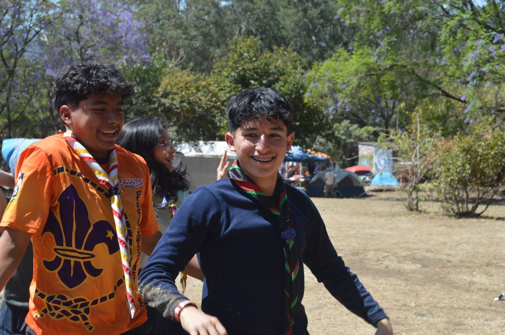

Toda la documentación oficial de ASMAC y WOSM en un solo lugar.



• ExplorApp: Registro y seguimiento de proyectos comunitarios dentro de los 4 Ejes Temáticos.
• CarpetApp: Carpeta digital para el control de progresión personal y especialidades.
 Paz y Acción
Paz y Acción
 Salud y Bienestar
Salud y Bienestar
 Habilidades
Habilidades
 Medio Ambiente
Medio Ambiente
Guía de Progresión y Aventura para Jóvenes
PDF Descargable • 240 págsTécnicas de Campismo y Primeros Auxilios
Colección Biblioteca del CentenarioConstruir un Mundo Mejor • ASMAC & WOSM
Animación vertical 9:16 sincronizada con Happy (160 BPM) mostrando la interfaz real de BiblioTech Scout.